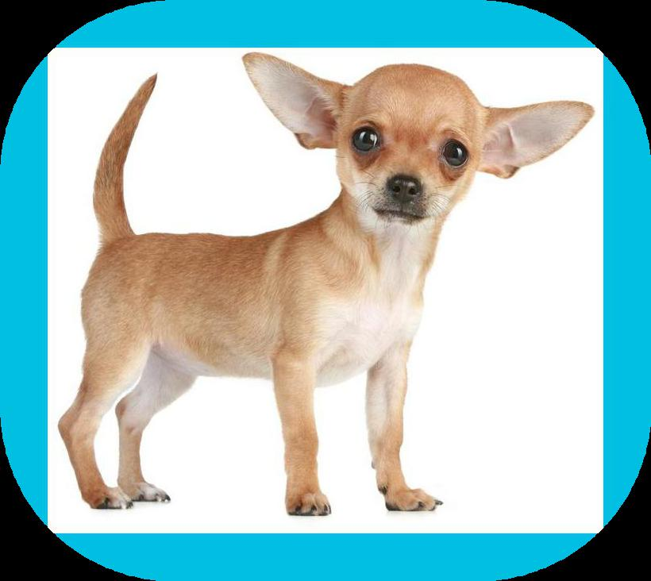

This is the original picture This is the modified picture



This is the finished code for the picture modification.
Reflection On the Project
This project was tedious and time consuming. It was similar to the Repl.it project in regards to having to code in Python but the coding was more advance. My partner and I spent one week creating code in order to manipulate an image. These manipulations include adding a blue border around the frame of the image and rounding off the edges. Line 5 of the coding creates the border around the imag while lines 39-46 rounds the edges. Line 56 saves the newly modified images and gives it the name that the user input when the code was ran.